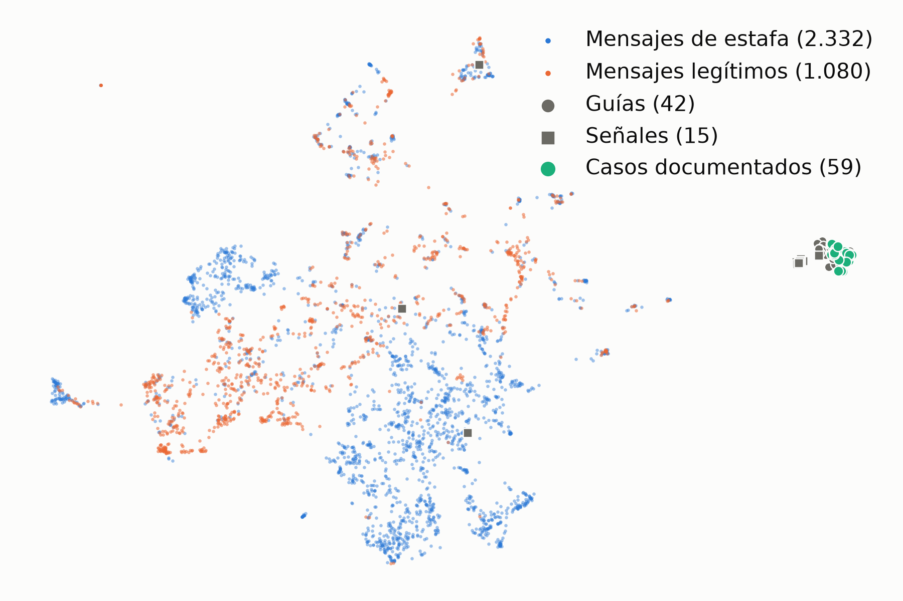

SafeFish
Detección de estafas en mensajes con RAG sobre casos documentados y guías oficiales
TP3 · 73.69 Large Language Models · ITBA 2026 — Diego Badin · Diego Rabinovich
El problema
- Las estafas llegan por WhatsApp, SMS y mail, u otros medios e imitan a bancos, familiares, correos y organismos.
- Las variantes cambian con frecuencia y los filtros por reglas no siempre son suficiente.
- La víctima no siempre reconoce el patrón
Por qué RAG: permite citar casos reales y guías oficiales, y la base se actualiza con modalidades nuevas sin reentrenar.
Qué entra y qué sale
Entra el texto o la captura del mensaje, un contexto opcional (“es de un amigo”) y lo que la persona ya hizo (no respondí, pagué, pasé un código…).
| Salida | Contenido |
|---|---|
| Veredicto | Estafa, muy sospechoso, levemente sospechoso o parece legítimo |
| Modalidad | Una de las 10 modalidades de la taxonomía, o “no determinada” |
| Señales | Cita literal del mensaje y su recuadro sobre la captura |
| Casos | Casos recuperados que respaldan la modalidad, con su fuente |
| Plan | Pasos tomados de guías oficiales según la situación |
Diez modalidades
01
Falso familiar / cambio de número
02
Phishing bancario
03
Robo de cuenta de WhatsApp
04
Falso comprador o vendedor
05
Falso soporte / acceso remoto
06
Premio o sorteo falso
07
Inversión falsa
08
Falso empleo / tareas pagas
09
Encomienda retenida
10
Deuda o multa falsa
Si ningún caso recuperado respalda una modalidad, la salida es no determinada.
Arquitectura propuesta
Indexación · una vez
Fuentes
36 páginas oficiales, SpaPhish, SpearPhishMX, recolectados
Limpieza
duplicados y datos personales
Normalización
LLM a un esquema fijo
Chunking
1 caso por chunk
Embeddings
text-embedding-3-small
Chroma
4 colecciones: casos, mensajes, señales, guías
Consulta · por mensaje
Extracción
captura → texto (visión)
Query rewriting
4 consultas
Retrieval híbrido
denso + BM25, RRF
Reranking
LLM, puntaje 0–3
Generación
salida estructurada
Verificador
reglas R1–R5
Plan
desde guías
Claude Sonnet 5.5 en extracción y generación · Claude Haiku 5.5 en rewriting, reranking y plan · embeddings de OpenAI.
Verificador: reglas R1–R5
| Regla | Qué controla | Si no se cumple | |
|---|---|---|---|
| R1 | Cita literal | Cada señal cita un fragmento que está en el mensaje (al menos 5 caracteres, coincidencia aproximada). | Se descarta la señal |
| R2 | Respaldo de la modalidad | La modalidad coincide con la de al menos un caso recuperado. | Pasa a “no determinada” |
| R3 | Estafa confirmada | Requiere modalidad respaldada y al menos 2 señales verificadas distintas. | Baja a muy sospechoso |
| R4 | Asimetría | “Parece legítimo” no puede tener una señal crítica verificada. | Sube a levemente sospechoso |
| R5 | Plan sin inventos | Teléfonos, links y mails del plan están en la guía de la que sale el paso. | Se reemplazan; un paso con un organismo ausente se elimina |
Reglas determinísticas, sin LLM. R1 a R4 corren sobre el análisis; R5, sobre el plan.
Datos
| Colección | Documentos | Origen |
|---|---|---|
| Casos | 59 | 36 páginas del BCRA, bancos, ministerios, INCIBE y prensa, normalizadas |
| Mensajes | 3.412 · 2.332 estafa, 1.080 legítimos | SpaPhish, SpearPhishMX y mensajes recolectados |
| Señales | 15 | Taxonomía propia: urgencia, link no oficial, pedido de código… |
| Guías | 42 | Procedimientos oficiales por modalidad y situación |
93
Golden: 93 mensajes etiquetados, 24 de dev y 69 de test, cada uno una sola vez: 51 mails de SpaPhish, 13 recolectados, 14 capturas y 15 con inyección de prompt.
Indexación: tres decisiones
1
Normalizar
Una nota de prensa y una guía del BCRA quedan con el mismo esquema: modalidad, canal, entidad, frases típicas.
2
Un caso por chunk
Un caso es una unidad.
3
Cuatro colecciones
Casos, mensajes, señales y guías por separado, cada una con su top-k.
Embeddings text-embedding-3-small (1536 dimensiones, normalizados) · Chroma con índice HNSW y similitud coseno
Proyección UMAP de los embeddings de la base

Casos, guías y señales describen la estafa. Los mensajes son la estafa.
Tres versiones, un cambio por vez
RAG base
Normalización, 4 colecciones, búsqueda densa, plan desde guías, verificador.
RAG avanzado
Query rewriting + RRF, búsqueda híbrida con BM25, reranking con LLM.
Versión 1
RAG iterado
Mensajes de contraste, plan adaptado a la entidad del mensaje.
Versión 2
Mismo golden, misma base y mismos modelos
RAG avanzado → RAG iterado
| Error de la Versión 1 | Cambio | Efecto (test · dev) |
|---|---|---|
| Falsos positivos en legítimos parecidos | Mensajes de contraste: filtro por metadata, mitad estafa y mitad legítimo | FPR 0,16 → 0,11 · F1 dev 0,86 → 0,96 |
| Modalidades sin caso de respaldo | Respaldo dirigido para la regla R2 | Sin efecto: no hubo casos que lo necesitaran |
| Plan genérico y con contactos de otra entidad | Plan adaptado: el planner ve el mensaje y usa las guías como estructura | Cobertura 0,50 → 0,83 · 0,41 → 0,88 |
Métricas
¿El contexto recuperado es correcto y está bien ordenado?
MRR · posición del primer caso correcto
nDCG@k · orden de toda la lista
¿El contexto alcanza para responder?
Hit-mod@k · algún caso correcto
Recall@k · casos correctos
Recall@k · señales esperadas
¿La respuesta responde lo que importa?
F1 de estafa
Acierto de modalidad
F1 de señales
Cobertura del plan
¿Sabe decir “no sé”?
| RAG base | RAG avanzado | RAG iterado | |
|---|---|---|---|
| Dice “no determinada” cuando corresponde | 5 de 5 | 5 de 5 | 4 de 5 |
| Dice “no determinada” de más | 7 de 31 | 3 de 31 | 4 de 31 |
¿Cuánto cuesta?
| RAG base | RAG avanzado | RAG iterado | |
|---|---|---|---|
| USD por análisis | 0,019 | 0,020 | 0,022 |
| Tokens de entrada | 12,3 mil | 27,5 mil | 34,5 mil |
| Tokens de salida | 0,9 mil | 2,3 mil | 2,8 mil |
| Llamadas al LLM | 2 | 7 | 8 |
Ejemplo: dónde se equivoca
Falso positivo
Mail de una universidad con link a “meet.net”
Legítimo en SpaPhish; el link no coincide con la marca porque el dataset reemplazó los dominios reales. El sistema dice muy sospechoso.
Falso negativo
“BBVA Alerta: movimiento inusual… llamanos a la Línea BBVA”
Casi idéntico a una alerta real; lo único que la delata es el número, que está tapado en la captura. El sistema dice levemente sospechoso.
Demo!
Limitaciones y trabajo futuro
Limitaciones
- Falsos positivos en legítimos parecidos a estafas (2 de 19).
- Lo que delata una estafa a veces no está en el texto: el remitente o el link real.
- 69 casos de test: intervalos de confianza anchos.
Trabajo futuro
- Repreguntar: si la evidencia no alcanza, pedirle a la persona más información (quién lo mandó, el link completo) antes de dar el veredicto.
- Vincular con casilla de spam del usuario para ampliar la KB automáticamente, y personalizado.
- Observabilidad con LangSmith para evaluar a menor costo.
Conclusiones
- La forma de indexar fue lo que más movió la recuperación: con una sola colección, el caso correcto aparecía en el 8 % de los mensajes; con cuatro colecciones, en el 84 %.
- El RAG avanzado mejoró qué se recupera y en qué orden
- Las métricas mejoran, pero no son perfectas.
- El análisis de errores llevó al RAG iterado y mejoró la cobertura del plan 0,45 → 0,83.